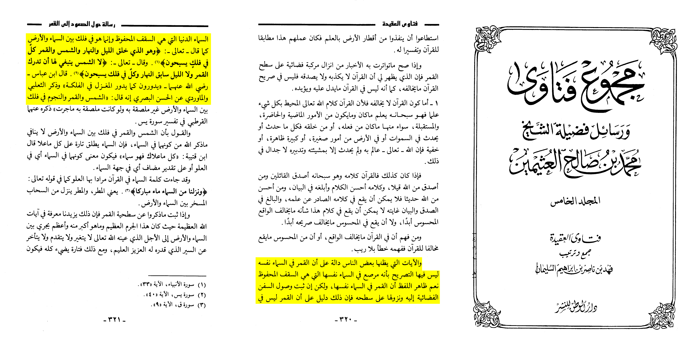
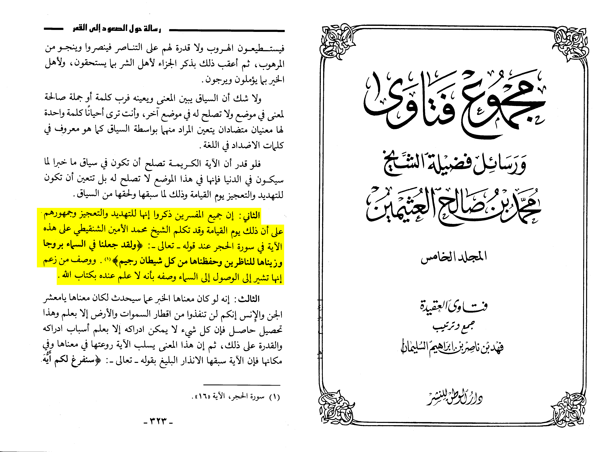

There are mainly 2 major opinons and answers
1 The moon is in the heaven doesn’t change the fact they didn’t go beyond it
2 The moon isn’t in the heaven
Muḥammad ibn Ṣāliḥ al-Uthaymīn (d. 1421 AH) says:
« and the verses that some people think prove that the moon is in the heaven itself has no explicit mention that it [the moon] is in the heaven itself which is the protected seal, yes the most apparent meaning that the moon is in the sky itself except if it was proven that space ships were able to reach the moon then this is proof that the moon isn’t in the worldly heaven that is the protected sealing, rather he is in an orbit between the heaven and the earth as he most exalted says: “And He is the One Who created the day and the night, the sun and the moon—each travelling in an orbit.” (Qur’ān 21:33) he exalted also said “It is not for the sun to catch up with the moon, nor does the night outrun the day. Each is travelling in an orbit of their own.” (Qur’ān 36:40). Ibn abbas said they turn like the maghzal turns in al-Falka, at-tha’labi and al-mawardi mentioned from al-Hassan al-Basri: the sun the moon and the stars are in an orbit between the heaven and the earth untouched. »
•📖 [Majmū' al-Fatāwā | 5/320-321]

These events would happen on the day of judgement
Muḥammad ibn Ṣāliḥ al-Uthaymīn (d. 1421 AH) states:
« All the exegesis mentioned that it is for warn and to weaken, and their majority believe that this would occur on the day of resurrection, ash-Shanqeetee mentioned in his exegesis about those verses and described the one who says they negate the moon landing as ignorants who have no knowledge of the Qur’ān. »
•📖 [Majmū' al-Fatāwā | 5/323]

Other mainstream scholars evidence for moon landing:
Bin bāz: https://binbaz.org.sa/articles/29/%D8%A7%D9%84%D8%A7%D8%AF%D9%84%D8%A9-%D8%A7%D9%84%D9%86%D9%82%D9%84%D9%8A%D8%A9-%D9%88%D8%A7%D9%84%D8%AD%D8%B3%D9%8A%D8%A9-%D8%B9%D9%84%D9%89-%D8%A7%D9%85%D9%83%D8%A7%D9%86-%D8%A7%D9%84%D8%B5%D8%B9%D9%88%D8%AF-%D8%A7%D9%84%D9%89-%D8%A7%D9%84%D9%83%D9%88%D8%A7%D9%83%D8%A8https://binbaz.org.sa/articles/30/%D8%AD%D9%88%D9%84-%D8%A7%D9%84%D8%B5%D8%B9%D9%88%D8%AF-%D8%A7%D9%84%D9%89-%D8%A7%D9%84%D9%83%D9%88%D8%A7%D9%83%D8%A8
Albani: https://m.youtube.com/watch?v=Ez8t016Zs-w
Uthman al-Khamis: https://m.youtube.com/watch?v=VtZhJEjFhOc